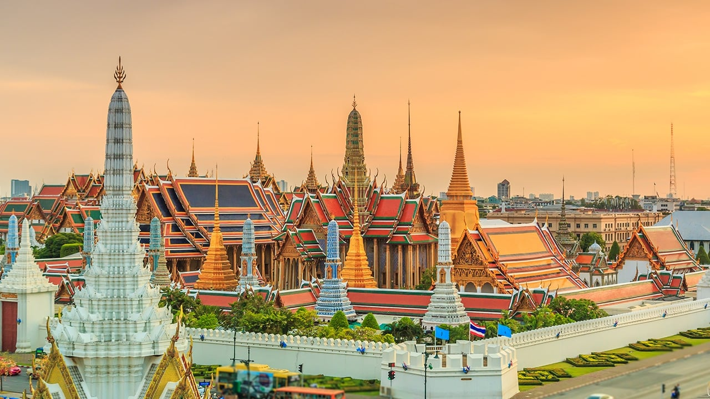
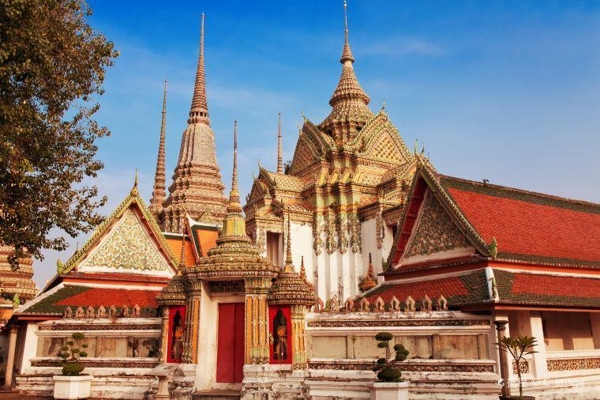

วัดพระแก้ว
วัดในกรุงเทพที่ประดิษฐานสิ่งศักดิ์สิทธิ์คู่บ้านคู่เมืองของคนไทย “พระแก้วมรกต หรือ พระพุทธมหามณีรัตนปฏิมากร” ซึ่งประดิษฐานอยู่ในพระอุโบสถอย่าพลาดเข้าไปกราบไหว้สักการะและขอพรเพื่อเป็นสิริมงคลกับชีวิต หลังจากไหว้พระขอพรก็เดินชมจิตรกรรมฝาผนัง และความวิจิตรบรรจงของความปราณีตของ...
วัดแจ้ง
ข้ามแม่น้ำเจ้าพระยากับตำนานสงครามยักษ์วัดโพธิ์กับวัดอรุณ เรารู้จักกันดีว่า วัดแจ้ง แลนด์มาร์ควัดสวย ๆ ในกรุงเทพวัดหนึ่งของนักท่องเที่ยวชาวต่างชาติ มาแล้วต้องได้ขึ้นไปสักการะพระปรางค์วัดอรุณ สายฮิปสเตอร์ชอบไปถ่ายรูป เนื่องด้วยสีพาสเทลขององค์พระปรางค์ทำมาจากถ้วยชามเบญจรงค์และเปลือกหอย...
วัดเบญ
อีกหนึ่งวัดสวย ๆ ในกรุงเทพ วัดเบญจมบพิตรดุสิตวนาราม อีกชื่อเรียกว่า วัดหินอ่อน “Mable Temple” วัดบนเหรียญห้าบาทของคนไทย เป็นที่รู้จักดีของนักท่องเที่ยวชาวต่างชาติ สร้างด้วยสถาปัตยกรรมโบราณ มีความวิจิตรงดงามประดับด้วยหินอ่อนที่ดีที่สุดจากอิตาลี ภายในอุโบสถเป็นที่ประดิษฐานของพระพุทธชินราช จำลองมาจาก...
วัดโพธิ์
ไปสักการะพระพุทธไสยาสน์ และไหว้พระวิหารสี่ทิศ ซึ่งได้มีพระพุทธรูปสำคัญจากสี่หัวเมืองใหญ่สมัยรัชกาลที่ 1 นำมาประดิษฐานไว้ ทิศตะวันออกประดิษฐานพระพุทธมารวิชัย ทิศตะวันตก ประดิษฐานพระชินศรีมุนีนาถ ทิศเหนือประดิษฐานป่าลิไลย ทิศใต้ประดิษฐานพระชินราชวโรวาทธรรมจักร...

วัดระฆัง
วัดเก่าแก่อีกแห่งหนึ่งของกรุงเทพมหานคร ภายในอุโบสถเป็นที่ประดิษฐานของ “พระประธานยิ้มรับฟ้า” แสนอ่อนโยนและมีเมตตา ภายในวัดมีตำหนักจันทน์หรือหอพระไตรปิฎกเป็นสถาปัตยกรรมสร้างในสมัยกรุงธนบุรี เดิมเป็นที่ประทับของพระบาทสมเด็จพระพุทธยอดฟ้าจุฬาโลกมหาราช เมื่อครั้งดำรงพระยศเป็น...จัดทำโดย
เด็กชายวีระชัยยุทธ เม้ยมิ่งเด็กชาย... ....